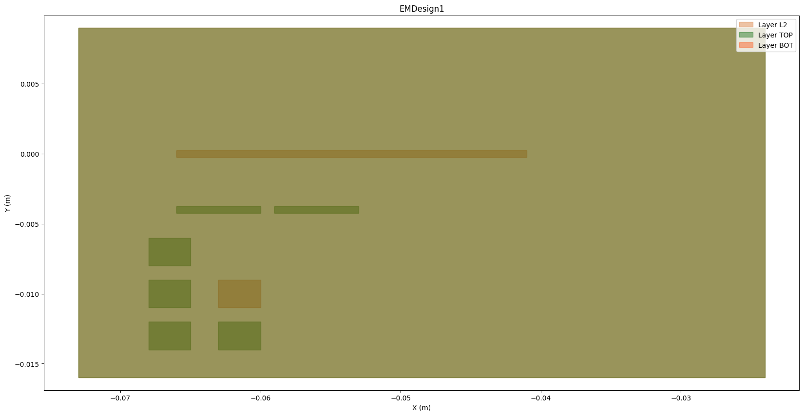

EDB simple example#
This example shows how to use the EDBCommon class to open an existing EDB project.
Perform required imports#
Perform the required imports.
[1]:
import sys
import os
import shutil
[2]:
from pyaedt import generate_unique_folder_name
[3]:
from ansys.aedt.toolkits.common.utils import download_file
from ansys.aedt.toolkits.common.backend.api import EDBCommon
Initialize temporary folder and project settings#
Initialize a temporary folder to copy the input file into and specify project settings.
[4]:
URL_BASE = "https://raw.githubusercontent.com/ansys/example-data/master/toolkits/common/"
EDB_PROJECT = "edb_edge_ports.aedb/edb.def"
URL = os.path.join(URL_BASE, EDB_PROJECT)
temp_folder = os.path.join(generate_unique_folder_name())
edb_path = os.path.join(temp_folder, "edb_example.aedb")
os.makedirs(edb_path, exist_ok=True)
local_project = os.path.join(edb_path, "edb.def")
download_file(URL, local_project)
[4]:
'C:\\Users\\ansys\\AppData\\Local\\Temp\\pyaedt_prj_PBY\\edb_example.aedb\\edb.def'
Initialize toolkit#
Initialize the toolkit.
[5]:
toolkit = EDBCommon()
Initialize EDB project#
Open the EDB project.
[6]:
load_edb_msg = toolkit.load_edb(edb_path)
PyAEDT INFO: Logger is initialized in EDB.
PyAEDT INFO: legacy v0.10.0
PyAEDT INFO: Python version 3.10.11 (tags/v3.10.11:7d4cc5a, Apr 5 2023, 00:38:17) [MSC v.1929 64 bit (AMD64)]
PyAEDT INFO: Database edb_example.aedb Opened in 2024.1
PyAEDT INFO: Cell EMDesign1 Opened
PyAEDT INFO: Builder was initialized.
PyAEDT INFO: EDB initialized.
DEBUG - Project C:\Users\ansys\AppData\Local\Temp\pyaedt_prj_PBY\edb_example.aedb is opened
Get toolkit properties#
Get toolkit properties, which contain the project information.
[7]:
new_properties = toolkit.get_properties()
edb_project = new_properties["active_project"]
Save project#
Copy the current project in a new file.
[8]:
directory, old_file_name = os.path.split(edb_project)
new_path = os.path.join(directory, "new_edb.aedb")
toolkit.save_edb(new_path)
INFO - Project C:\Users\ansys\AppData\Local\Temp\pyaedt_prj_PBY\new_edb.aedb saved
[8]:
True
Get cell names#
Get cell names using PyEDB.
[9]:
toolkit.logger.info("Play with EDB")
cell_names = toolkit.edb.cell_names
toolkit.edb.nets.plot()
INFO - Play with EDB
PyAEDT INFO: Nets Point Generation time 0.063 seconds

Save and release EDB#
Save and release EDB.
[10]:
toolkit.close_edb()
PyAEDT INFO: EDB file release time: 0.00ms
INFO - EDB is closed.
[10]:
True
Remove temporary folder#
Remove the temporary folder.
[11]:
shutil.rmtree(temp_folder, ignore_errors=True)